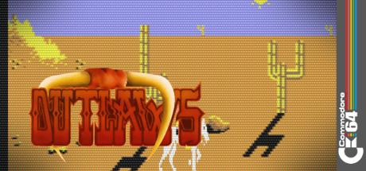

Outlaws
Overview
Game Summary
In Outlaws you are the Lone Rider, a Wild West hero galloping across prairie and town in this Commodore 64 side‑scroller. Mounted on your horse you can ride both ways, shoot bandits and dodging obstacles. Duck in the saddle to avoid enemy fire and avoid shooting innocent civilians, as that hurts your score.
Explore